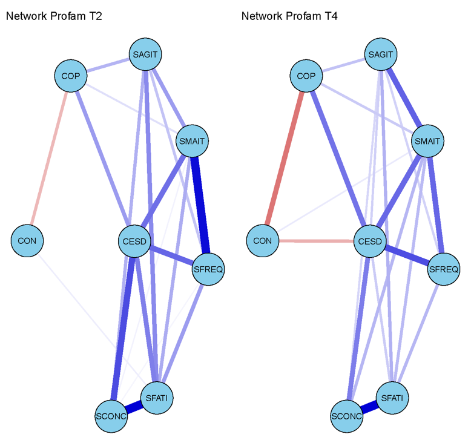
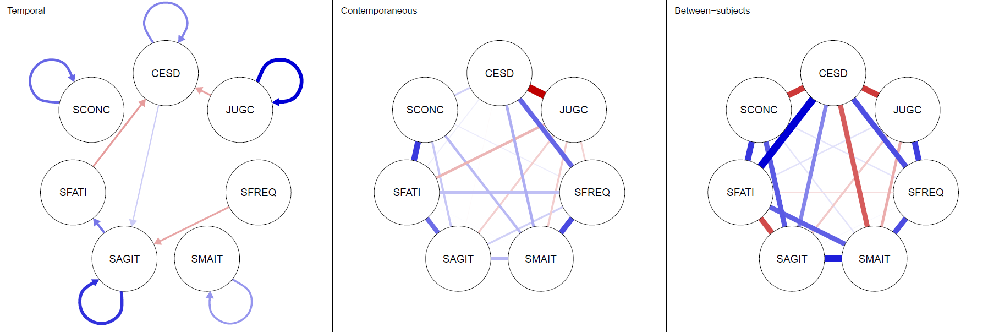

Les systèmes complexes en psychologie : la question psychométrique
L’objectif est de décrire ici l’origine de l’utilisation des approches en systèmes complexes en psychologie et notamment à partir de questions de psychométrie, c’est-à-dire de mesure des phénomènes psychologiques.
Les termes de complexité et de systèmes semblent communs et applicables en psychologie, et ce plus particulièrement dans le champ des troubles psychiques [@friedSystemsAllWay2020]. En revanche, le terme de systèmes complexes est mis à l’arrière-plan d’un autre terme, qu’il soit employé avec approche, théorie, modèle ou analyse, celui de réseau. Une des raisons est que les “modèles en réseau représentent de la manière la plus claire les divers processus sous-jacents aux systèmes auto-organisés, par lesquels l’ordre, l’autorégulation et la dynamique à la limite du chaos tendent à émerger avec un nombre suffisant de nœuds et de connectivités nodales” [@pincusNonlinearDynamicsBiopsychosocial2010]1.
Les approches en réseau, une brève histoire des premiers pas en psychologie
Comme le soulignent @golinoExploratoryGraphAnalysis2022a en introduction de leur article, 2022 marque une décennie de nouvelles possibilités méthodologiques pour la psychologie avec les techniques de modélisations en réseau disponibles grâce au package R qgraph qui permet de les estimer et de les visualiser [@epskampQgraphNetworkVisualizations2012]. Et les auteurs de rappeler également que cela a donné naissance à un nouveau sous-domaine de la psychologie quantitative intitulé en anglais “network psychometrics” [@isvoranuNetworkPsychometricsGuide2022; @borsboomPossibleFuturesNetwork2022].
Pourtant, les auteurs nous indiquent également que l’histoire d’une approche en réseau en psychologie est plus ancienne qu’il n’y parait et remontrait aux travaux de Cattell. Ce dernier est connu en psychologie pour sa théorie de la décomposition du facteur général d’intelligence en une intelligence dite “cristallisée” (dépendante des connaissances et “verbale”), une dite “fluide” (indépendante des connaissances et “non verbale”) [@andreValiditePsychometriqueRegard2016]. Selon @golinoExploratoryGraphAnalysis2022a, citant @bokerReticularActionModel2018, Cattell concevait les relations entre les variables latentes comme des relations en réseau. C’est ce que le terme “reticular” dans “Reticular Action Model” doit être compris selon @bokerReticularActionModel2018 comme soulignant le fait que “la modélisation par équations structurelles doit être comprise comme étant un modèle de réseau”. @golinoExploratoryGraphAnalysis2022a indiquent que les travaux de @guttmanImageTheoryStructure1953 ont proposé une technique répondant à la méthode factorielle de Spearman & Thurstone2 mais capable d’inclure d’autres types de structures que la structure factorielle. Selon les auteurs, cette technique (image structure analysis) est très fortement similaire à la technique de régression (node-wise regression) utilisée dans les méthodes d’analyses en réseau.
D’un point de vue historique, d’autres éléments confirment que le développement, à partir des années 1930, des méthodes d’analyses factorielles a offert de nouvelles perspectives de modélisation des données psychologiques. Cependant, très tôt, les chercheurs prenaient bien garde de distinguer ce que permettait la méthode en tant que reflet résumé d’un phénomène et de ce qui relevait d’une “réalité” théorique différente et probablement d’une nature plus complexe de ce phénomène.
Dans un pre-print @beckWithinPersonVariability2019 citent Cattell mais également Allport sur la question des modélisations et mesures de la personnalité, un autre domaine de la psychologie qui utilise très fréquemment les modélisations par analyses factorielles. @beckWithinPersonVariability2019 rappellent que par delà la modélisation factorielle qui permet une analyse et un résumé au niveau du fonctionnement nomothétique (ce qui permet de décrire un phénomène au niveau d’un ensemble de sujets ou d’une population, parfois appelée inter-sujets), ce niveau est constitué d’une pluralité et d’une complexité idiographique (ce qui permet de décrire un phénomène au niveau individuel, parfois appelé intra-sujet). Ils rappellent également une vision de la complexité des phénomènes envisagés, et ici de la personnalité en rappelant le caractère “dynamique”, “systémique” et “contextuel” de cette dernière.
“In addition to the rise of factor analysis contributing to the adoption of personality traits as the key units of personality psychology, two founding fathers of personality, Gordon W. Allport and Raymond B. Cattell, adopted traits into their theoretical and empirical studies of personality. Understanding personality in terms of trait units opened up many new questions regarding the number of traits, the nature of those traits, and the organization of traits. […]
However, Allport was a reluctant adopter of nomothetic approaches to personality, which he termed “common traits.” What common traits do capture are the measurable aspects of complex, individual (or idiographic) traits.
The task for those interested in common traits, Allport argued, was to employ the methodological and statistical tools that made the measurement as precise and “serviceable” (Allport, 1937, p. 300) as possible. In other words, although Allport was a staunch advocate of an idiographic conceptualization of personality, he recognized that such assessment could, in some cases, be more detailed and intensive than was necessary. In such cases, it would be useful to reduce complex sets of data into simpler sets that allowed for simpler measurement.
To this end, he was a staunch advocate of (1) the use of factor analysis as an aid when a priori specification (i.e., the structure, number, or content of the common trait was not known beforehand) was insufficient and (2) of the use of profiles that place common trait measurements in the context of one another.
Nomothetic approaches contained inherent error in the sense that, within an individual, each trait was unique as it was based on an individual’s “unique hereditary endowment, the different developmental history, and the never-repeated external influences that determine each personality”. Nomothetic traits could not capture all of those unique components. Indeed, in his seminal book Personality, A Psychological Interpretation, Allport defined personality as “the dynamic organization within the individual of those psychophysical systems that determine his unique adjustments to his environment” “.
Extraits de @beckWithinPersonVariability2019
Selon @golinoExploratoryGraphAnalysis2022a, les approches en réseau en psychologie ont gagné en importance à partir des travaux publiés en 2006-2008 à l’université d’Amsterdam au sein du groupe Psychological Methods avec deux articles princeps de @vandermaasDynamicalModelGeneral2006 et @borsboomPsychometricPerspectivesDiagnostic2008. Ces deux articles sont également présentés comme à l’origine de l’essor de la modélisation en réseau dans l’éditorial du numéro spécial “Network psychometrics in action” de la revue Psychometrika3. Dans cet article, @marsmanGuestEditorsIntroduction2022, après avoir rappelé les développements du modèle factoriel après les travaux de Spearman, citent la conclusion de l’article de @borsboomPsychometricPerspectivesDiagnostic2008 indiquant qu’ “il n’y avait actuellement aucune théorie psychométrique élaborée pour accompagner la perspective [en réseau]”.
Il est intéressant de constater que ces deux articles reposent fortement sur des aspects psychométriques et de modélisation des relations entre variables dites “observées”4. Afin de mieux comprendre les implications de ces travaux, nous utiliserons la très claire explication schématique présentée par @friedWhatArePsychological2017 sur trois types différents de modélisations statistiques pour les construits psychologiques que l’on retrouve également sur son excellent blog ainsi que sur PsyArXiv.
D’un point de vue psychométrique, les trois modèles présentés par @friedWhatArePsychological2017 présentent des différences. Le premier modèle, dit modèle “latent” autrement appelé “modèle de la cause commune” ou de “facteur commun” consiste à considérer que les 10 signes ou mesures sont des indicateurs indirects d’une cause commune, latente donc non directement observable. Le second modèle est appelé modèle “formatif” ou “d’effet commun”, c’est-à-dire qu’il s’agit d’un construit formé par des indicateurs ou d’une conséquence commune de variables. Ici les 10 signes ou mesures construisent l’indicateur au même titre par exemple que le statut économique et social peut être composé à partir (ou être une conséquence) de la connaissance de la catégorie professionnelle, du niveau de revenu etc5. Enfin, le troisième modèle est dit “en réseau” et suppose que les 10 signes ou mesures interagissent et s’influencent mutuellement faisant ainsi “émerger” une ou des propriétés nouvelles qui ne peuvent se résumer à la somme des parties (voir ?@sec-ComplexSystems).
Critiques du modèle latent
Afin d’introduire les approches en réseau, nous allons tout d’abord nous intéresser au premier modèle et présenter quelques critiques de ce dernier qui ont amené au développement des approches en réseau en psychologie. Pour ce premier modèle, du point de vue classique dit de “modèle de mesure”, il s’agit d’un modèle factoriel où chaque item est régressé sur (expliqué par) la variable latente. Nous n’évoquerons pas le modèle formatif, cependant les lecteurs intéressés pourront se référer l’article de @friedWhatArePsychological2017 ou à ce billet de blog.
Pour revenir au modèle factoriel et à titre d’exemple, si l’on considère la dépression comme une entité latente, c’est parce que l’on considère que c’est la présence de la dépression qui explique l’apparition de symptômes tels que l’insomnie, la fatigue où encore la tristesse. Si l’on développe une échelle de mesure de la dépression, c’est en utilisant des questions qui portent sur l’insomnie, la fatigue, des pensées de dévalorisation et la tristesse qu’il nous est possible d’identifier la présence de la variable latente dépression. Cette relation “d’indication” est possible dans la mesure où l’on suppose que la dépression vient justement influencer la manière de répondre aux questions. Ainsi, c’est parce que je souffre de dépression que je vais répondre oui à des questions sur la présence de signes tels que l’insomnie, la fatigue, des pensées de dévalorisation et de la tristesse. Autrement dit, la présence de ces signes s’explique par la présence de la dépression.
Le modèle factoriel, dans un modèle de mesure, traduit cette relation mathématiquement par des coefficients de régressions entre les items et la variable latente ou facteur6. Ces derniers sont appelés “loadings” (ou poids factoriel en français) et traduisent numériquement l’importance relative (lorsqu’ils sont standardisés) des indicateurs de la variable latente7. Il traduit également une autre propriété importante qui est moins souvent considérée, il s’agit de l’indépendance locale. Elle se signifie par l’absence de toutes connexions directes entre les items indicateurs de la variable latente. Autrement dit, dans le cadre de notre exemple sur la dépression, l’indépendance locale interdit explicitement les relations causales directes entre les signes tels que le fait de souffrir d’insomnie et en conséquence d’être fatigué, puis en conséquence d’avoir des pensées de dévalorisation et en conséquence d’éprouver de la tristesse. Cette indépendance locale est une condition au modèle factoriel qui postule que le facteur est l’unique élément explicatif ou “cause” de la covariation positive entre les items8. Ces deux approches, latente et en réseaux, sont très élégamment discutées d’un point de vue épistémologique par @Guyon2017. Dans leur article les auteurs utilisent également la dépression pour illustrer la différence de modélisation.
Si les modèles sont équivalent mathématiquement et qu’un modèle latent correspond a à un réseau complètement connecté [@VanBork2019a] tel que présenté dans les figures de @Guyon2017, ils ont en revanche des implications théoriques différentes (cause commune ou phénomène émergent). La difficulté repose donc ici sur la nature même de ce qui est modélisé : est-ce le modèle latent ou le modèle en réseau qui décrit le mieux le mécanisme qui “génère” les données que l’on observe [@friedLackTheoryBuilding2020] ?
“In data where columns are variables and rows are participants, I can usually estimate network and factor models without problems. Even if I know that the data generating mechanism is a network—for instance, because I simulated the data myself—I will not get arrested by the psychometrics police for fitting the ‘wrong’ model (i.e. a factor model) to the data, and vice versa.”
Extrait de Lack of Theory Building and Testing Impedes Progress in The Factor and Network Literature de @friedLackTheoryBuilding2020
Cette question est d’autant plus pertinente, si les phénomènes que l’on observe relèvent d’une nature massivement multifactoriels plutôt que d’une cause commune [@Borsboom2019]. Les modélisations latentes constitueront dans ce cas un modèle qui impose des contraintes sur les données qui ne sont probablement en accord avec la verisimilitude du modèle théorique supposé.
“I argue that the empirical implications of reflective and formative models will often be violated by data since the causally relevant constituents will generally be multivariate, not univariate.
These empirical implications can be formally tested but factor analysis is not adequate to do so. I argue that formative models misconstrue the relation between the constructed measures and the underlying reality by which causal processes operate, but that reflective models misconstrue the nature of the underlying reality itself by typically presuming that the constituents of it that are causally efficacious are unidimensional. […]
There is no underlying univariate latent variable that corresponds to our construct, say, of intelligence, such that “true intelligence” gives rise to the measured indicators. The underlying reality corresponding to our constructs is far more complex than a univariate variable.”
Extraits de [@vanderweeleConstructedMeasuresCausal2022]
C’est un des points importants qui amène Eiko Fried à considérer l’importance de la réflexion théorique et à ne pas confondre modélisation théorique et modélisation statistique.
“My take now is that one of the biggest challenges is to try to bring your data to bear on your theory. When I explain this to students, I always use linear regression. I learned as a student that linear regression has an assumption, namely that variables need to be related linearly. But I never really got my head around truly what it means that a model has an assumption.
How I think about this now is that if your theory predicts a linear relationship, then you should use a model that imposes a linear relationship on your data that you can then try to bring the data to bear on the theory. That’s sort of the circle, but we don’t have theories to impose assumptions on data to then bring them to bear on our theory so that people just use statistical models. We use linear regression. There’s no justification for it.
That’s not easy, but I think it’s indeed a challenge that we use models. And in my paper, I talk about a couple of areas of psychology, like factor models, for example, that everybody uses, but I rarely see the rationale for why these models are the right models to bring the data to bear on your theory. And if that step isn’t taken, things get tricky very quickly.”
Extrait d’une interview d’Eiko Fried réalisé par @shipperCanAIML2023
Bien évidemment, il ne s’agit pas de rejeter “en bloc” les modélisations latentes qui s’avèrent tout particulièrement pertinentes dans les questions de mesure ou pour modéliser certains phénomènes en psychologie (ceux qui impliquent une cause commune). Dans leur article @Guyon2017 défendent une vision pragmatique-réaliste (proche du concept de verisimilitude) qui ne nient pas, par exemple, l’existence de phénomènes tels que la dépression, mais considèrent en même temps qu’il n’existe pas une chose telle que “la vraie dépression”). Ils reconnaissent une pertinence aux modélisations en réseau tout en soulignant une citation de @Epskamp2017b “network modeling and latent variable modeling can complement — rather than exclude — one another. . . we think the assumption of no underlying latent traits . . . may often be too strict.”. @Guyon2017 soulignent donc l’intérêt de modélisations qui permettent de combiner ces deux techniques (lmodélisation latente et en réseau) comme les Latent Network Models et Network Residuals9.
“Latent Network Models and Network Residuals, as proposed by Epskamp et al. (2017), are certainly a promising new way to infer psychological attributes, combining latent attributes and dynamic systems of manifestations.”
Extrait de Modeling Psychological Attributes in Psychology – An Epistemological Discussion: Network Analysis vs. Latent Variables de @Guyon2017
Si l’on s’accorde sur la complexité des phénomènes en psychologie et que la modélisation en réseau semble pertinente ou “approcher” avec un autre outil cette question, alors il s’avère important de s’intéresser aux constituants ou indicateurs de ces modèles.
La question des indicateurs
De la variabilité des indicateurs
Dans le cadre des analyses en réseau (et aussi pour analyses en équations structurelles), la sélection des variables à inclure dans les modèles est une étape primordiale et constitue “un choix principalement motivé par des considérations de fond plutôt que méthodologiques […] Il est important de noter que les inférences tirées des résultats des méthodes d’analyse de réseau nécessitent à la fois une connaissance substantielle du domaine et des considérations méthodologiques générales concernant la stabilité et la robustesse du réseau estimé afin d’informer de manière optimale les inférences scientifiques.”[@borsboomNetworkAnalysisMultivariate2021].
Il convient à nouveau de souligner que, quelle que soit la modélisation, la variabilité des indicateurs choisis du construit, facteur ou système pose question [@heinzeVariableSelectionReview2018]. Nous avons précédemment évoqué le travail en cours sur flexibilité dans la construction des indicateurs du niveau socio-économique et sociale (SES) [@chuan-pengAssessmentFlexibilityMeasurement2022]. Les premières analyses ont pu mettre en évidence qu’à partir de 53 articles incluant des mesures du SES en lien avec des données d’imageries, correspondant à 38 “jeux de données” différentes, il y avait 45 manières différentes de construire cet indicateur https://twitter.com/eikofried/status/1324008129974198281.
En ce qui concerne les modèles factoriels ou en réseau, une des problématiques, comme pour de nombreux modèles, concerne celui de l’absence de variables cachées qui pourraient exercer une influence (par exemple modératrice) sur les modèles [@westreichTableFallacyPresenting2013]. Ainsi l’absence de certaines variables ou la variabilité quant à leur présence ou absence dans certaines analyses pose question quant à la reproductibilité et la généralisabilité de leurs résultats [@friedLackTheoryBuilding2020]. A titre d’exemple, parmi 280 instruments de mesure des symptômes dépressifs recensés, Fried a analysé sept instruments très largement utilisés en recherche. Il a pu mettre en évidence qu’ils mesuraient 52 symptômes différents dont seulement 12% étaient commun entre ces sept échelles et 40 % des symptômes étaient présent dans une seule échelle, la CES-D [@Fried2017c].
Cela crée une situation purement tautologique que nous avons illustrée dans une publication comme un “piège épistémologique de perpétuelle codétermination en boucle entre la définition d’une entité clinique et sa mesure”10 [@morvanNetworkModelingPsychopathology2020]. Une manière plus simple de présenter ce raisonnement “tautologique” pourrait se faire de la manière suivante : “Comment savons-nous que ce patient souffre de dépression ? Parce que ce patient présente tous les symptômes de la dépression. Comment savons-nous qu’il présente tous les symptômes de la dépression ? Parce que ce patient souffre de dépression”11.
Du choix des indicateurs
Une autre difficulté relève du choix des indicateurs. Toujours concernant la dépression, Eiko Fried dans son billet de blog résumant un symposium sur la mesure au congrès de l’APS en 2018 rappelle notamment les travaux de @kendlerDevelopmentFeighnerCriteria2010 sur l’origine des indicateurs symptomatologique retenu pour la dépression dans le DSM à partir de 1980. Ces derniers sont en effet largement basé sur des choix historiques qui ont constitué des paramètres initiaux sur lesquels les travaux ultérieurs se sont appuyés. Le chemin évolutif des critères est donc dépendant pricipalement de ces paramètres initiaux plutôt que des travaux psychométriques. Dans un autre billet de blog, Eiko Fried, considère que ces décisions sont le résultat de décisions historiques plutôt que scientifiques (au sens d’une réflexion psychométrique sur la validité de la mesure).
Ces éléments pourraient être considérés comme une variabilité des indicateurs acceptable dans la définition d’un construit et ce, d’autant plus si l’on considère la pratique courante dans les analyses factorielles exploratoires de réduction d’items pour la construction d’échelle de mesure. Cela devient beaucoup plus délicat si l’on regarde d’une perspective en réseau. En effet, comme le rappelle également @friedLackTheoryBuilding2020, “l’idée d’une cause commune est profondément ancrée dans la manière dont les chercheurs mesurent les concepts psychologiques” si bien que des indicateurs ayant de faibles capacités à être expliqué par une variable latente (un poids factoriel faible expliqué par une faible corrélation avec les autres indicateurs) sont considérés comme “de mauvais indicateurs et sont supprimés”. Pourtant les indicateurs qui sont considérés comme mauvais dans une perspective latente ne le sont pas nécessairement dans une perspective en réseau. A l’aide d’une simulation où le mécanisme générateur des données est connu (car défini par l’expérimentateur) un indicateur ayant un faible poids dans une représentation factorielle est en réalité l’élément déclencheur d’une chaîne causale (cf. schéma de @friedLackTheoryBuilding2020).
Des effets d’indicateurs manquants
Une des particularités des modélisations en réseau réside dans l’estimation des paramètres globaux du système. Cependant, comme le rappellent @borsboomNetworkAnalysisMultivariate2021 si des “indicateurs” du réseau (on parlera ici préférentiellement d’éléments ou de composants du réseau/système) sont manquants cela peut affecter la structure du réseau. En effet, cela peut produire une augmentation de la relation en certains éléments du système qui représente en réalité l’effet d’une cause commune qui n’est pas prise en compte ou mesurée. Par ailleurs, si des éléments du système sont en réalité redondants (ils représentent ou mesurent plus ou moins le même construit) cela influencera aussi l’architecture du réseau modélisé.
Les auteurs enjoignent donc les lecteurs à une interprétation prudente des modélisations en réseau, ces derniers étant fortement dépendant des choix opérés par les chercheurs sur les composants qu’ils souhaitent inclure dans la modélisation en réseau. Ils considèrent que des davantage de recherches sont nécessaires afin de “développer des cadres théoriques qui permettent d’orienter ces choix”. Dans un article ultérieur, @borsboomPossibleFuturesNetwork2022a renouvelle cette prudence sur le degré de confiance des propriétés statiques des modélisations en réseau alors qu’il est fort probable que “presque tous les réseaux sont susceptibles de présenter des nœuds [éléments] manquants”.
Si l’on s’interroge sur l’utilisation de ces techniques (ou pour toutes autres techniques, quelles qu’elles soient) en recherche clinique ou pour les cliniciens, @bringmannPsychopathologicalNetworksTheory2022 indiquent également qu’une des premières étapes est donc de choisir judicieusement les variables à inclure dans le modèle. Ils rappellent que “dans la pratique clinique, un point de départ consiste souvent à discuter avec le patient des principales raisons qui le poussent à chercher de l’aide et des symptômes et problèmes qu’il considère comme les plus pesants”. Cependant, comment choisir les éléments qui éclaireront le mieux les processus psychopathologiques ? Les auteurs considèrent que pour valider le choix des éléments, il convient :
de justifier théoriquement ou cliniquement ces choix et
d’évaluer leur caractère unique (par exemple à l’aide de techniques statistiques telles que celles développées par @christensenUniqueVariableAnalysis2023).
Nomothétique et idiographique
Type de données en psychologie
Une des particularités des approches en réseau, telles qu’elles ont été présentées jusqu’à présent, relève de leur caractère nomothétique. Cela signifie qu’il s’agit de modélisations principalement réalisées sur des données transversales où un grand nombre d’individus sont interrogés (en général sur un nombre potentiellement important de variables), mais à un seul instant donné du temps. On rencontre plus fréquemment ce type de “design” par exemple dans des études épidémiologiques (de mesure de prévalences et de variables associées).
Exemple de visualisation d’analyses en réseau sur des données transversales (deux temps du programme Profamille) [@valladierEvaluationImpactProgramme2020]

D’autres types de données sont possibles comme des données en séries temporelles où il s’agit de suivre un ou plusieurs individus interrogés (en général sur un nombre potentiellement moindre de variables) sur plusieurs instants du temps (en général un nombre potentiellement important). Ce type de “design” d’étude est retrouvé dans les études d’évaluation écologique momentanée (EMA en anglais) ou méthode d’échantillonnage d’expériences (ESM en anglais).
Exemple de visualisation d’analyses en réseau sur des données transversales (deux temps du programme Profamille) [@valladierEvaluationImpactProgramme2020]
Enfin, un troisième type de donnée concerne des données dites de panel où un grand nombre d’individus sont interrogés (en général sur un nombre potentiellement important de variables) également sur plusieurs instants du temps (en général un nombre nettement moindre de temps). On rencontre ce type d’étude notamment dans le cadre de suivi de cohorte.12
Exemple de visualisation d’analyses en réseau sur des données de panel (trois temps du programme Profamille [@valladierEvaluationImpactProgramme2020], communication personnelle lors du Network Amsterdam Summer School 2020). Pour information, les visualisations de modélisations sur des données de séries temporelles sont identiques s’il y a plusieurs individus interrogés. Si un seul individu est suivi dans le temps alors la partie “between-subject” n’est, logiquement, pas présente dans les résultats de la modélisation.

Ergodicité
Une des critiques des approches nomothétiques en psychologie consiste à considérer que les résultats de ces études qui apportent des informations issues de variations inter-individuelles sont généralisés de manière abusive pour comprendre et expliquer le niveau idiographique constitué de variations intra-individuelles. Cette critique en psychologie, n’est pas nouvelle et @barbotNewDirectionsStudy2015 rappellent que Catell, dès les années 1952, faisait déjà la distinction entre approche nomothétique et idiographique. Catell employait les modélisations par analyses factorielles sur des séries de données temporelles individuelles (appelée P-technique en différence à R-technique qui utilisait l’analyse factorielle sur des données nomothétiques). Dans un pre-print récent @beckNetworkApproachesRepresenting2023 précise que cette question était présente dès 1946 chez Catell dans la manière dont ont pouvait organiser les données entre sujets, variables et temps de mesures.
Cette critique a pris une nouvelle dimension au début des années 2000 grâce à Peter Molenaar qui a utilisé le concept d’ergodicité présent en physique statistique [@molenaarManifestoPsychologyIdiographic2004a].
La particularité du concept d’ergodicité est que celui-ci est requis afin de permettre justement de généraliser des résultats nomothétiques au niveau idiographique. La difficulté réside dans le fait que la plupart des phénomènes étudiés en psychologie semblent non-ergodique. @barbotNewDirectionsStudy2015, rappellent que pour qu’un phénomène soit ergodique, au minimum deux conditions sont requises :
que le phénomène évalué ne change pas au cours du temps par exemple qu’il fluctue autour d’une moyenne stable (stationnarité)
que chaque composant du phénomène évalué se comporte exactement de la même manière et suive la même dynamique au cours du temps (homogénéité)
“Such inferences are theoretically possible only when the process under study is”ergodic,” that is, when (a) the process is stationary over time and (b) each individual in the population obeys to the same dynamics (Molenaar & Newell, 2010). These conditions are rarely met in group-level studies of developmental processes, leading many to focus on idiographic approaches.”
Extrait de @barbotNewDirectionsStudy2015
Une autre manière d’illustrer la problématique (de non-ergodicité) est d’utiliser la métaphore de la photo13. Il s’agit de considérer que le système nomothétique est comme un instantané pris d’un groupe de personnes qui sont en réalité en mouvement. S’il est possible de se représenter hypothétiquement une trajectoire moyenne des individus présents sur l’instantané on comprend aisément que cette trajectoire moyenne risque ne ne pas correspondre à une trajectoire moyenne de l’ensemble de ces mêmes individus si l’on prend en compte “le film” c’est-à-dire si l’on dispose de données temporelles.
Cela correspond au théorème ergodique de Birkhoff qui suppose qu’un système est ergodique lorsque les moyennes spatiale et temporelle sont égales presque partout.
Cette métaphore permet de bien comprendre la critique présente en psychologie sur l’abus de généralisabilité des résultats nomothétiques sur des processus idiographiques. En effet, on comprend bien ici que la trajectoire moyenne que l’on pourrait inférer à partir de l’instantané s’appliquera très bien à un individu moyen, mais que cet individu moyen ne correspondra peut-être a aucun individu présent sur le cliché. De même, sa trajectoire moyenne ne correspondra pas, non plus, aux trajectoires observées sur le film.
Si ce point fait référence au second principe d’homogénéité, en ce qui concerne le principe de stationnarité, on peut aisément imaginer que les personnes présentes dans le film peuvent aussi par exemple :
s’arrêter brutalement devant une vitrine pour observer quelque chose
changer de direction de manière abrupte pour se diriger vers un autre magasin
ralentir pour converser avec la personne qui les accompagne
accélérer pour rentrer chez soi plus rapidement
L’idée que des phénomènes puissent être non stationnaires est justement ce que l’on cherche à produire en psychologie dans le cadre d’interventions cliniques où il s’agit, par exemple, de faire diminuer au cours du temps l’intensité de tel symptôme, la fréquence d’apparition de tel comportement ou cognition.
Mise en perspective
Cette critique et opposition entre approche nomothétique et idiographique doit cependant être pondérée dans la mesure où il convient de distinguer les techniques de modélisation (data model) appliquées sur les données (data) des inférences causales que l’on cherche à identifier (causal assumptions)14.
Ce point de vue est extrêmement bien expliqué par Payton Jones dans un billet de blog intitulé “Why idiography can’t save us” où il explique que l’enjeu réside justement dans la compréhension causale des phénomènes individuels qui sont à différencier de la mesure de la variance intra-individuelle [@jonesWhyIdiographyCan2019]. Justement les variances intra (“within”) et inter-individuelles (“beetwen subjects”) sont in fine le résultat de causes intra-individuelles. Dit autrement, les informations que l’on obtient à partir de données nomothétiques sont le produit de (et donc contiennent des) données idiographiques.
“Moreover, within-person variance is not any closer to a within-person causal model than between-person variance is! Both within- and between-person variance are ultimately the result of within-person causes. This becomes easier to understand in the context of human development. If differences exist between-persons, that difference is resultant from some within-person causal process at some point in time. Differences between people are caused by differences within those people.
Another way to think of this is to realize that in a random sample, there is no such thing as “between-person causes”— these would only exist if the members of the sample were interacting with one another. This leaves only within-person causes.
Both between- and within-person variance tell you different things and each come with their own limitations. It’s difficult, but possible, to come up with sets of reasonable causal hypotheses from either type of data. […]
Now I don’t mean to imply that within-persons analyses aren’t valuable or important, or that you shouldn’t do them just because they are difficult to get right. I actually think they are pretty cool and I’m glad people do them. They capture some really interesting data that has been ignored for many, many years. What I do mean to imply is that within-persons analyses are not a straightforward path to understanding within-persons causality. […]
I don’t think there is anything wrong with within-persons data. But I also don’t think it makes sense to stomp on between-subjects analyses in a misguided attempt to promote within-persons analyses. I truly think we’ve generated some important ideas using hypothesis-generating methods like between-subjects psychometric networks. I hope we make even more progress with within-person hypothesis generating networks! But if it’s theory and causality that we’re after, I don’t think within-persons analyses can get us there without some serious help.”
Extraits de Why idiography can’t save us de @jonesWhyIdiographyCan2019
L’important consiste à considérer qu’à partir de ces deux types de données nomothétique ou idiographique, les inférences causales proposées peuvent s’avérer tout autant éclairante (et complémentaires) du phénomène que l’on cherche à expliquer.
Après avoir présenté le développement des approches en réseau en psychologie, principalement au travers du prisme de la psychométrie, il convient de d’illustrer comment ces techniques peuvent être utilisées concrètement et notamment en psychologie clinique.